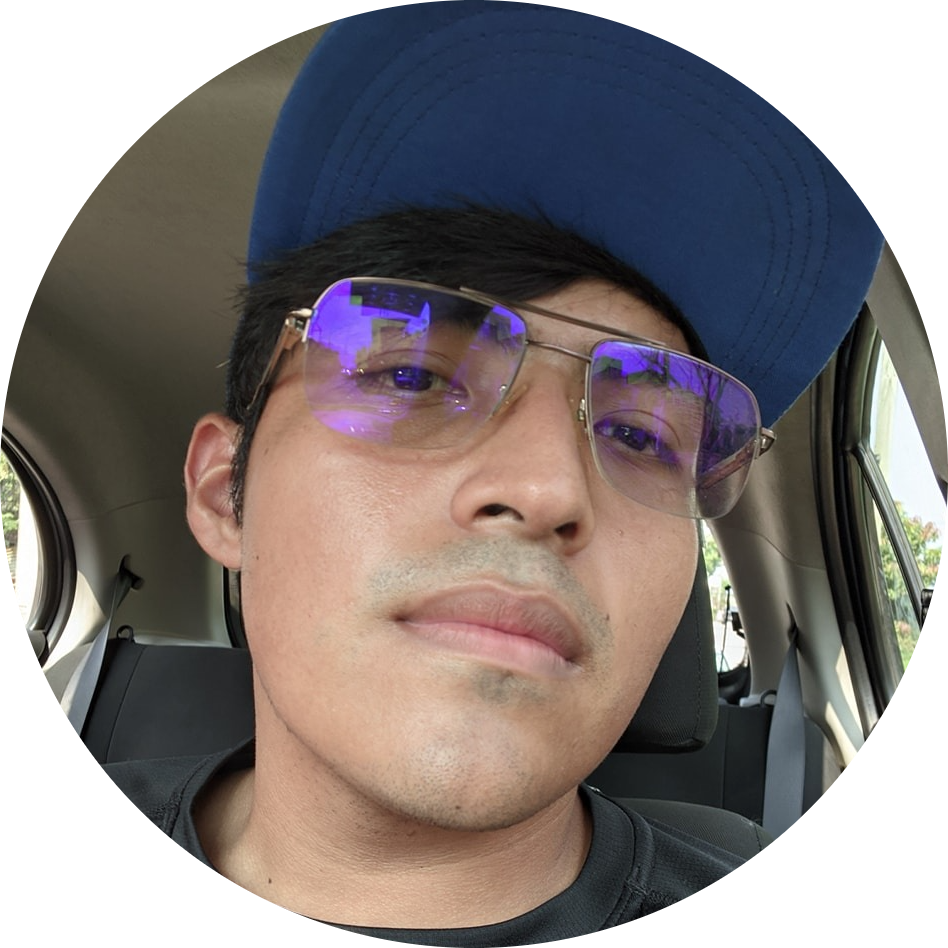

Hiram de Jesús Santiago Santiago.
Sobre mi
Estudiante de Ingeniería de software de 7mo semestre de la Universidad Veracruzana que busca obtener experiencia laboral en alguna empresa
Contacto
Número:
9222550281
Correo:
hiram013@gmail.com
Dirección:
Uruguay #79 Col. Nueva Mina
Datos académicos
Universidad Veracruzana
Ingeniería de software| Actual
CETIS 72
Electrónica| Agosto 2015 - 2018
Idiomas
Español
Nativo
Ingles
Intermedio
Habilidades blandas
Trabajo en equipo
Responsabilidad
Flexibilidad
Gestión de tiempo
Cursos
Accesibilidad WEB| Junio 2022